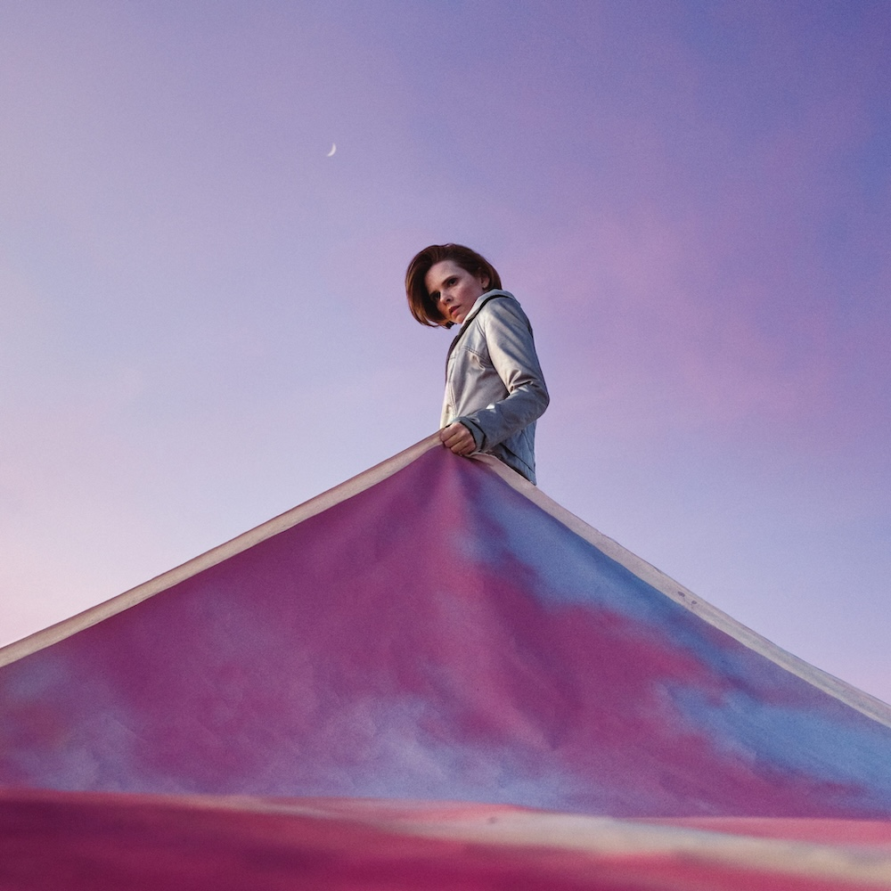

Jan. 2, 2025
The first time I listened to this album, I was still off work sick with Covid, but well enough to go out for a walk on what was too hot a day to stay inside the house. I remember it well, recovering from illness does tend to make these things more vivid, but more because I thought it was brilliant, but all out of order. I was, of course, completely wrong.
“My Light, My Destroyer” follows on from Cassandra’s excellent 2021 album “An Overview on Phenomenal Nature”. AOOPN, as we shall call it for brevity, was one of those albums that you listen to and just think to yourself “Jesus fuck, why has no one thought to make music like this before?!” and also a little bit of begrudging respect for the critics who put it into your orbit in the first place.
But on that first listen to this album, it felt like AOOPN had been a perfect tarot hand and this, its sequel, was the same cards played in a different and inferior permutation. Nine of swords reversed and all that.
The familiar ingredients were there: the soft arrangements, the spoken word sections, the field recordings, and so on. But it felt messy. But an album isn’t necessarily meant to be wrapped up in a bow, it doesn’t have to start at point A and end up at point B. We all know this by now, and there’s no harm in re-learning this lesson that is true of many creative endeavours.
The relative randomness of all the elements works better when you have some familiarity with what’s coming next. It helps that the all-out songs on MLMD are for the most part really catchy. “Devotion” is a cool breeze in the early evening, all one-liners and invocations of strength. “Delphinium Blue” is simultaneously about grief, working in a flower shop, and the dehumanising effects of late-stage capitalism. “Petco” is a sardonic trip through a pet store as though it were an online dating app for a lifetime companion.
The song that floors me every time though is “Aurora, IL”, partly because its themes of depression relating to creative failure really resonated with me this year. That it does while subtly mentioning the overview effect (and the hypocrisy of it) makes the song an even more impressive piece of craft.

Because I’ve loved so many albums this year, after each review I am going to include a couple of pointers to additional albums that you might enjoy if you like the album in the main review. This is not me showing off (well, not much), but rather giving credit to the many excellent albums released this year!
I had not listened to much of Beth’s solo work outside of Portishead. This is her first solo album under her own name (the others were collaborations) and it’s brilliant. If albums are like any other form of art, then they are meant to take us to new perspectives and new places. This certainly does. I particularly like the equanimous take on existence that is espoused in “Floating on a moment”.
This diaphanous collection of songs and instrumentals is perhaps not the strongest ever set from Natasha Khan, but it is still a lush collection that makes its runtime flash by. The title track is so good it’s included twice, and for good reason. Some beautiful harp versions have also been release that are well worth checking out.